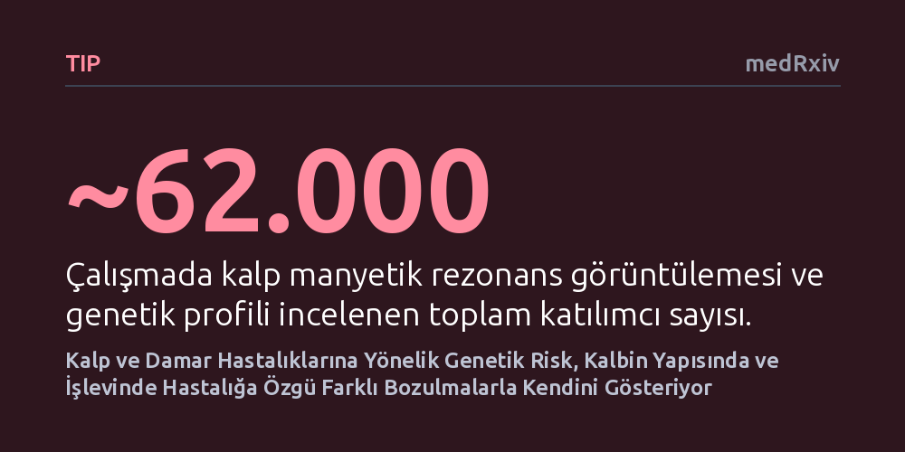

TIP · medRxiv · 2026-10-14
Araştırmacılar, yaklaşık 62 bin kişinin verisini inceleyerek beş yaygın kalp-damar hastalığına ait genetik riskin kalp yapısı ve işlevindeki erken yansımalarını araştırdı. Yüksek genetik riskin her hastalıkta kalbin farklı bölümlerinde özgül yapısal bozulmalarla ortaya çıktığı belirlendi.
Genetik yatkınlığın henüz klinik bir hastalık belirtisi yokken bile kalbin hangi bölgesinde ne tür fiziksel hasar oluşturabileceğini göstererek, kişiye özel erken tanı ve koruyucu tedavi stratejilerinin önünü açıyor.

Kalp ve damar hastalıkları dünya genelinde en sık karşılaşılan sağlık sorunlarının başında geliyor ve bu hastalıkların gelişiminde kalıtımın, yani aileden devralınan genlerin payı oldukça büyük. Ancak bir bireyin DNA'sında yüksek risk taşıması, organ düzeyinde tam olarak neyin ters gittiğini tek başına açıklamıyor. Genetik risk skorları sayesinde bir kişinin kalp krizi ya da inme geçirme ihtimalini sayısallaştırabiliyoruz; fakat bu riskin kalp dokusuna henüz hastalık belirtisi vermeden önce nasıl yansıdığı, kalbin hangi odacığında ne tür biçim bozukluklarına yol açtığı uzun süredir aydınlatılmayı bekleyen bir soru işaretiydi.
Bu sorunun cevabı, klinik teşhis konmadan önceki sessiz dönemi anlamak açısından kritik bir önem taşıyor. Çünkü kalp yetmezliği veya damar tıkanıklığı gibi tablolar birdenbire ortaya çıkmıyor; arka planda kalbin kas dokusu sessizce kalınlaşıyor, odacıklar genişliyor veya pompalama mekanizması kademeli olarak bozuluyor. Eğer genetik yatkınlığın kalbin mimarisinde bıraktığı bu ilk izleri tespit edebilirsek, henüz belirti göstermeyen riskli bireyleri çok daha erken aşamada saptamak ve kalpteki bu yeniden biçimlenme sürecini durdurmaya yönelik hedefe yönelik adımlar atmak mümkün olabilir.
Araştırma ekibi bu bağlantıyı ortaya çıkarmak amacıyla Birleşik Krallık Biyobankası (UK Biobank) veri tabanında yer alan yaklaşık 62.000 katılımcının verilerini mercek altına aldı. Katılımcıların tüm genom dizilimleri incelenerek beş yaygın kalp ve damar hastalığı için poligenik risk skorları hesaplandı: Kalp yetmezliği, koroner arter hastalığı, atriyal fibrilasyon (kulakçık ritim bozukluğu), karın aortu anevrizması ve iskemik inme (damar tıkanıklığına bağlı felç).
Daha sonra bu genetik risk değerleri, katılımcıların ileri düzey kalp manyetik rezonans görüntüleme (MRG) taramalarından elde edilen 28 farklı yapısal ve işlevsel ölçümle eşleştirildi. Bilgisayarlı görüntüleme teknikleriyle kalbin karıncık ve kulakçık hacimleri, duvar kalınlıkları, aort damarının çapı ve kan pompalama oranları hassas bir şekilde ölçüldü. Araştırmacılar, istatistiksel aracılık modelleri kurarak, genetik riskin doğrudan hastalığa mı dönüştüğünü, yoksa kalpteki bu fiziksel değişimler üzerinden mi ilerlediğini titizlikle test etti.
Analiz sonuçları, yüksek genetik riskin tüm kalp hastalıklarında tek tip bir hasar yaratmadığını, tam aksine her hastalıkta kalbin farklı bir bölgesini hedef aldığını net bir şekilde ortaya koydu. İncelemede genetik risk skorları ile kalp görüntüleme ölçümleri arasında istatistiksel olarak anlamlı 97 farklı bağlantı saptandı. Ayrıca kalpteki 32 yapısal özelliğin, genetik yatkınlık ile gelecekte ortaya çıkan hastalık olayları arasında doğrudan bir 'aracı köprü' görevi üstlendiği belirlendi.
Hastalıkların kalpte bıraktığı izler oldukça belirgin farklılıklar gösterdi. Örneğin kalp yetmezliğine yönelik genetik risk kalbin tüm odacıklarını etkilerken, özellikle sol karıncık ve sol kulakçığın pompalama işlevini bozuyor ve aort damarının genişlemesine yol açıyordu. Ritim bozukluğu olan atriyal fibrilasyon ise her iki kulakçığın büyümesi ve özellikle sol kulakçığın kasılma gücünün zayıflamasıyla kendini gösterdi.
Buna karşılık, koroner damar tıkanıklığı ve iskemik inme riskinin merkezinde sol karıncık kasının aşırı kalınlaşması (hipertrofi) yer alıyordu; inme riski özellikle karıncık duvar kalınlığındaki artışla doğrudan ilişkiliydi. Karın aortu anevrizmasına genetik yatkınlığı olan bireylerde ise temel anormallik kalbin çıkışındaki inen aort damarının belirgin şekilde genişlemesi olarak kaydedildi. Bu bulgular, farklı damar ve kalp hastalıklarının henüz klinik aşamaya gelmeden önce dahi organ üzerinde tamamen kendine has biyolojik mekanizmalarla ilerlediğini gösteriyor.
Elde edilen sonuçlar, genetik risk analizlerinin klinik tıptaki kullanımına dair somut bir bakış açısı sunuyor. Bireylerin yalnızca genel bir risk kategorisine sokulması yerine, hangi hastalık türüne yatkın olduklarına bakılarak kalplerinin tam olarak hangi bölgesinin risk altında olduğu öngörülebilir hale geliyor. Bu durum, gereksiz ve yaygın taramalar yerine, risk grubundaki kişilere odaklanmış erken görüntüleme taramaları yapılabilmesini sağlayabilir.
Yine de bu bulguların doğrudan bir tedavi kılavuzuna dönüşmesi için temkinli olmak gerekiyor. Çalışmanın önbaskı aşamasında olması ve çoğunlukla gözlemsel verilere dayanması nedeniyle, tespit edilen kalp değişikliklerinin hastalığın tek sebebi olduğunu söylemek mümkün değil. Ancak çalışma, kalpteki bu erken biçim bozukluklarını hedef alacak yeni koruyucu ilaç denemelerinin ve yaşam tarzı müdahalelerinin hangi hedefe odaklanması gerektiği konusunda araştırmacılara net bir harita sunuyor.